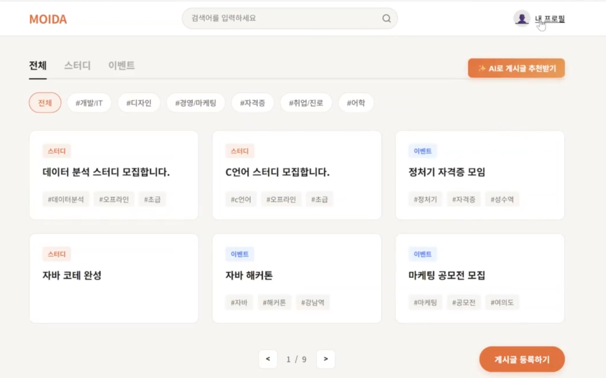
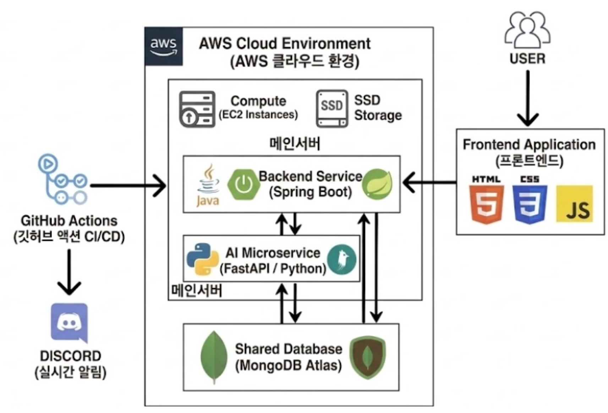

Backend
- 게시글 CRUD · 검색 API
- 동적 검색 · 커서 페이지네이션
- AI 서버 연동 (실패해도 글 저장)

Overview
대학생이 스터디 · 프로젝트 · 이벤트를 찾고 팀을 꾸리는 매칭 플랫폼
수준 · 목표 · 가능한 시간이 맞는 사람끼리 연결하는 데 초점을 둔 3주 프로젝트입니다. 게시글 백엔드와 서버 배포를 맡았습니다.

Role & System
Spring 서버가 게시글을 관리하고, 추천 · 태그는 FastAPI AI 서버에 요청합니다. 두 서버는 EC2에서 Docker 컨테이너로 실행됩니다.

Backend
게시글 도메인(작성 · 조회 · 검색 · 추천 요청)을 Spring Boot로 구현하고, 팀원이 만든 FastAPI 추천 서버와 연결했습니다.
AI 전처리 호출이 실패하면 키워드 · 임베딩 없이 원문만 저장하고 로그를 남김
AI 서버 장애가 핵심 기능(글 작성)을 막지 않음
API
| 게시글 작성 | 작성 + AI 전처리 |
|---|---|
| 게시글 목록 | 검색 · 필터 · 커서 페이징 |
| 게시글 상세 | 단건 조회 |
| 추천 요청 | AI 서버로 중계 |
| 태그 생성 | AI 태그 요청 |
추천 · 태그 알고리즘(FastAPI)은 AI 담당 팀원이 구현했고, 저는 Spring에서 호출 · 결과 저장 · 실패 처리를 맡았습니다.
마지막으로 본 게시글 다음부터 조회해서, 목록이 길어져도 앞쪽을 건너뛰는 비용 없이 다음 페이지를 가져옵니다.
Deploy — 트러블슈팅
main에 push하면 이미지를 빌드해 Docker Hub에 올리고, EC2에서 받아 실행하는 파이프라인을 직접 구성했습니다.
DB URI · JWT · OpenAI 키는 GitHub Secrets에 두고 배포 시 컨테이너 환경변수로 주입
로컬과 운영에서 달라지는 주소 · 시크릿을 환경변수로 분리
같은 이미지가 어느 환경에서나 동작
환경별 설정 분리
같은 이미지, 환경변수만 다르게